正在连接 helper…
历史
API 设置 · 墨墨 / GRS / 自定义
预设

全部
★ 收藏
☆ 收藏
删除
提示词
清空
存为预设
AI 帮写提示词
保存
要求模型保持构图（贴回更容易对齐）
参考图
0/4
把图片拖到这里，或点「上传图片」
上传图片
PS 选区加参考
截图加参考
清空
生成
平台
张数
1
2
3
4
模型
比例
分辨率
思考强度
选区外扩
0%
10%
25%
50%
发送的画面
自动（有选区发合并可见，没有发当前图层）
合并可见图层
只发当前图层
不发图（纯文字生图）
失败自动换网页 / CLI 平台（只换到支持同一比例的）
贴回
用原选区做蒙版
蒙版收缩
2%
边缘羽化
5%
传回为
智能对象
普通图层
生成组颜色
无
红
橙
黄
绿
蓝
紫
灰
校色
不校色
全局校色
精准校色
混合校色
快速对齐
完成提示音
替换纹理
自动传回
检查点（生成时存整张画布的无损 PNG，PS 崩了能找回）
关闭
每 5 分钟最多一张
每 10 分钟最多一张
每 30 分钟最多一张
生成并贴回快捷键
启用
保存快捷键
连接 helper 后生效；支持 Cmd / Ctrl / Alt / Shift。
生成并贴回
生成组
打开专用 Chrome
控制台